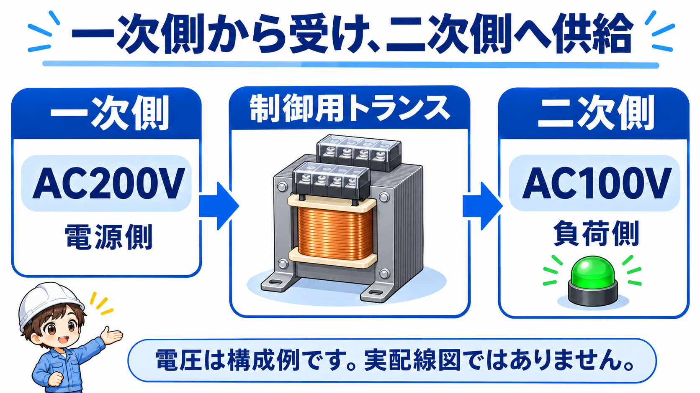
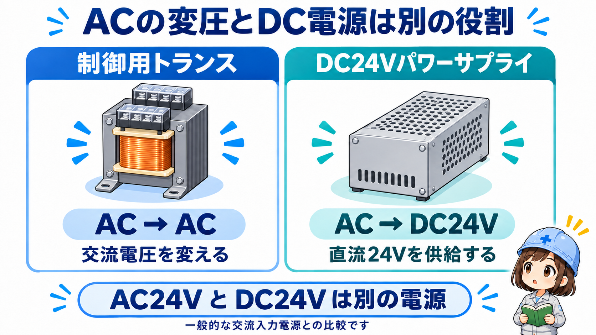
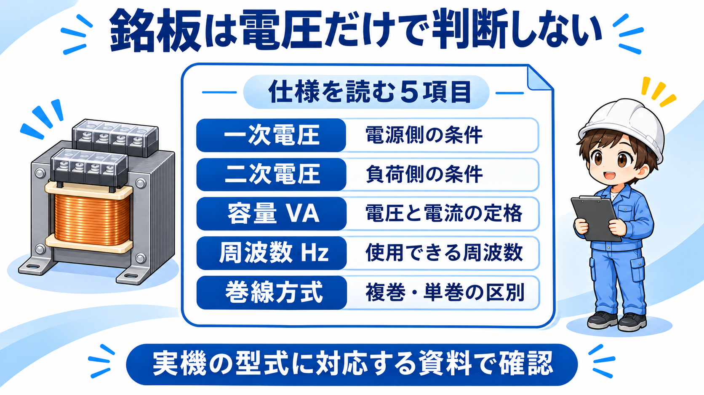
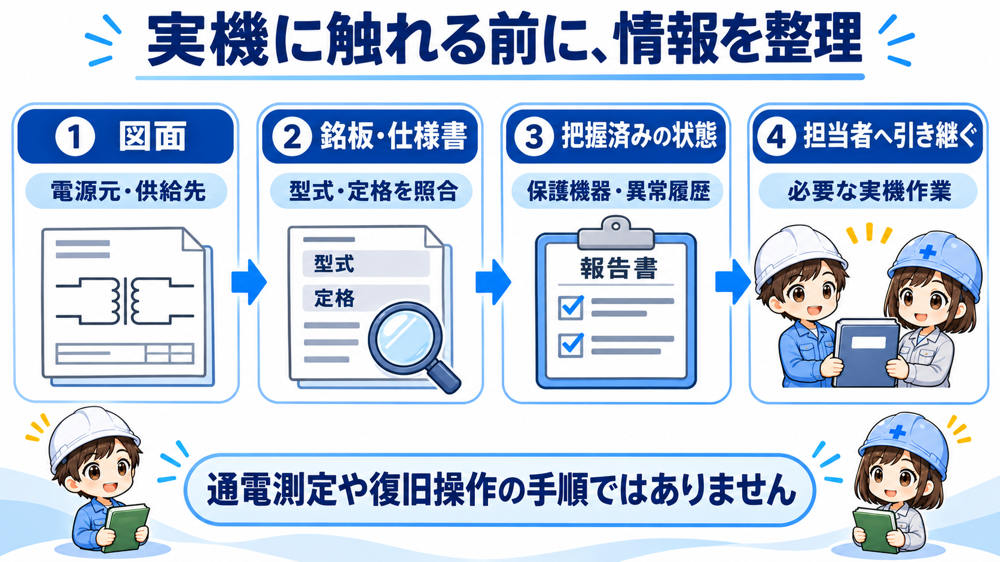

制御用トランスとは？一次側から受け、二次側へ供給する
制御用トランスは、制御盤の操作回路や表示回路に必要な交流電源を供給するために使う変圧器です。電源を受ける側を一次側、負荷へ供給する側を二次側と呼びます。
たとえばAC200VからAC100Vへ変える構成があります。ただし、すべてが200V→100Vとは限りません。一次・二次が同じ定格電圧の製品や、二次側がAC24Vの製品もあります。この記事では、制御盤で使う小型の単相トランスを中心に整理します。

電圧とAC・DCをセットで読む
通常の制御用トランスだけでは交流が直流にはなりません。「24V」と書かれていても、AC24VかDC24Vかを区別することが大切です。
先輩一次側は電源を受ける側、二次側は負荷へ供給する側だよ。どちらが高い電圧か、という名前ではないんだ。
後輩入口と出口を分けて、実際の電圧は銘板で読むんですね。
制御盤では電源の行き先を分けて読む
図面では、一次側がどの電源系統から来ているか、二次側がどの制御回路へつながるかを追います。二次側の供給先には、仕様の合う表示灯、リレーや接触器のコイル、タイマなどがあります。
押しボタンは回路を開閉する部品です。「二次側から押しボタンへ配る」という表現だけで終わらず、その接点を通してどの負荷を制御しているかまで図面で区別すると、電源の流れを理解しやすくなります。
トランス本体だけでなく、一次側・二次側の保護機器も確認対象です。ヒューズやサーキットプロテクタは、負荷側の異常や誤配線なども考えて選定されます。トランスは投入時の電流が通常時と異なるため、容量の数字だけで保護機器を決めるものではありません。
保護機器が動いたら、原因を残したまま戻さない
ヒューズ切れや保護機器の動作だけで、トランス本体の故障とは断定できません。負荷側や配線を含めた確認が必要です。定格を大きくして済ませたり、保護を省いたりしないでください。
制御用トランスとDC24V電源の違い
どちらも制御盤の電源まわりで使いますが、出力する電源の種類が違います。ここでは、商用交流を入力する一般的なDC24Vパワーサプライと比較します。

| 見る項目 | 制御用トランス | DC24Vパワーサプライ |
|---|---|---|
| 基本の役割 | 交流電源を制御回路に必要な電圧で供給する | 入力電源から安定した直流24Vを供給する |
| 出力の例 | AC100V、AC24Vなど | DC24V |
| 確認する表示 | 一次・二次電圧、容量VA、周波数、巻線方式 | 入力条件、出力電圧・電流、使用条件 |
| 接続先 | その交流電源に適合する制御機器 | 直流24Vに適合するセンサーやPLCなど |
同じ盤に両方入る場合もあります。負荷の定格と電源系統を照合し、AC24VとDC24Vを取り違えないようにしましょう。直流電源側はDC24V電源の基本で詳しく整理しています。
銘板で読む基本仕様：電圧・VA・周波数

- 一次・二次電圧：電源側と負荷側を区別します。複数の電圧表示がある場合は、使用する端子の組合せを製品の結線図で確認します。
- 容量（VA）：供給できる電圧と電流の大きさに関わる定格です。単相では定格二次電圧×定格二次電流で表せますが、これだけで実際の負荷に適合すると決まるわけではありません。
- 周波数（Hz）：50Hz、60Hz、50/60Hzなどの指定を確認します。電圧が合うだけで使用可能とは判断しません。
- 巻線方式・使用条件：複巻か単巻か、設置条件や絶縁仕様なども照合します。
VAはそのまま消費電力Wを示す表示ではありません。ここでは容量計算や選定を深掘りせず、「電圧だけでなく、容量・周波数・巻線方式までセットで読む」と覚えれば十分です。
複巻と単巻、絶縁と安全を混同しない
複巻トランスは一次巻線と二次巻線が電気的に絶縁されています。一方、単巻トランスは巻線の一部を共有するため、一次側と二次側の間は絶縁されていません。「トランスがあるから必ず電気的に分離されている」とは判断できません。
絶縁されていても、触れて安全とは限らない
二次側も感電の危険がある電源です。「制御用」「複巻」という名称だけで、安全電圧や感電保護の条件を満たすとは判断できません。二次電圧、絶縁仕様、接地方式、設備に必要な保護条件を確認します。
まず図面・銘板・保護機器で電源系統を整理する
制御電源が入らないときは、いきなりトランスを故障と決めず、どの系統に異常があるかを整理します。次の図は情報を確認する順番であり、通電測定や復旧操作の手順ではありません。

- 図面で一次側の電源元と二次側の供給先を区別する。
- 実機の型式・銘板と、電圧・容量・周波数などの仕様を照合する。
- 既に把握できている保護機器の動作や異常履歴を整理する。
- 通電状態の測定や配線確認が必要なら、設備の安全手順に従える適切な作業者へ引き継ぐ。
この記事を見ながら端子へ触れない
実機作業では設備の停止、電源の遮断など、現場で定めた安全措置が必要です。この記事は測定器の接続や配線変更の手順を示していません。一次側・二次側とも、安全が確認されていない端子へ触れないでください。
確認したメーカー資料
- 東洋技研：トランスフォーマーシリーズ（PDF）：F-6の保護回路・複巻と単巻、F-7の仕様と容量、製品ごとの電圧構成。
- 東洋技研：TRH-21Sシリーズ：単相・複巻製品の一次／二次電圧、容量の例。
- 鎌田信号機：よくある質問：交流電圧の変換、単巻と複巻の違い。
- オムロン：パワーサプライの概要：交流から直流電源へ変換する役割。
公式資料確認日：2026年11月13日。実際の選定・施工には、使用する型式の最新資料と設備仕様を確認してください。
まとめ：一次・二次と電源の種類を分けて読む
制御用トランスは、一次側で電源を受け、二次側から交流の制御電源を供給する部品です。DC24V電源とは役割が違うため、電圧の数字に加えてAC・DCも確認しましょう。
銘板では一次・二次電圧、容量VA、周波数、巻線方式を照合します。複巻と単巻を混同せず、実機の測定や復旧は定められた安全手順で行うことが大切です。